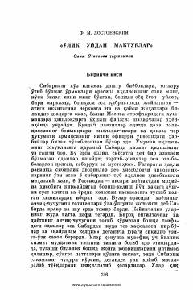

OUDostoyevskiyning katorga hayotidan ilhomlangan buyuk klassik asari.
Bu asar Fedor Dostoyevskiyning Sibir katorga lageridagi hayotidan ilhomlangan avtobiografik romanidir. Asarda mahkumlarning og'ir turmush sharoiti, ruhiy iztiroblar va insoniy qadr-qimmat mavzulari chuqur tasvirlanadi. Dostoyevskiyning shaxsiy katorga tajribasi asosida yozilgan bu kitob jahon adabiyotining nodir namunalaridan biri hisoblanadi.